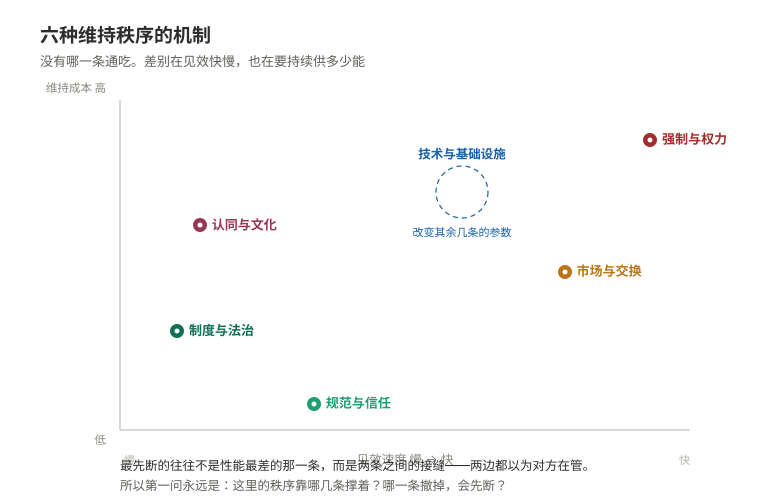

12 人如何一起做事
一句话：素不相识的人能形成稳定秩序，既不是因为有谁在下命令，也不是因为人天生善良，而是因为好几条各自有条件、各自会断的机制同时在撑着。
一、为什么值得知道
几个能对上号的场面。
第一个场面：小区里换电梯。
一栋楼的电梯该换了，报价几十万。业主群里两百多号人，大部分互相不认识，只知道对方住几零几。有人牵头收钱。于是问题来了：谁来管这笔钱？管钱的人跑了怎么办？一楼住户说我不坐电梯，为什么要出钱？有人拖着不交，你能怎么办？最后事情黄了，电梯继续响。
这件事里有意思的地方是：没有一个人是坏人。牵头的人未必想贪，不交钱的人也未必是骗子——他只是在算自己的账。秩序没有形成，不是道德问题，是条件问题。
第二个场面：同一条规则，十个人管用，五百个人就废了。
"有事直接说，别走流程"——十个人的团队里这是效率，因为每个人都知道别人手上有什么活，一嗓子就解决了。同一个规则搬到五百人的组织，就变成了互相插队、重复劳动、谁的活都没人认账。于是开始有周报、有审批、有排期表。老员工会说"以前多简单"。
不简单。是人一多，每个人能看见的范围占整体的比例就塌下来了。十人时你能看见谁在偷懒，五百人时你只能看见自己那一格。
第三个场面：匿名的时候像换了个人。
同一个论坛，实名板块里人人客气，匿名板块里三天两头骂起来。同一个人、同一个话题、同一台电脑，只是换了一个"是否署名"的开关。
差别不在教养，在于匿名把这一次交往的未来切掉了：骂完不用再见面，那么"下次还打交道"这个约束就没了。人的行为不是随品格变化，是随这次互动的后续变化。
第四个场面：越是公开透明，越可能出事。
一家银行被传"快撑不住了"。监管出来说：我们的资产是充足的，账面数据全部公开。结果呢——挤兑反而更快了。原因不难理解：银行的钱大部分是放出去的长期贷款，短期拿不回来，而存款是可以随时取的。公布"资产充足"这句话本身没错，但它不能立刻变成现金，而排在队伍前面的人只想一件事：我别是最后一个。
粮价上涨时也一样：媒体越是报道涨价，大家越是囤，囤了越是涨。这里不是有人撒谎，是信息在传播过程中改变了被描述的东西。
第五个场面：出了事，没有人对整条链负责。
一个产品出了问题，做研究的人说我只负责做出结果，做工程的人说我只负责放大，管质量的人说我只负责检测，销售的只说卖。每一环都合规，每一环都说"那不归我管"，而整条链上没有一个位置是"对最终结果负责"的。
第六个场面：一群好人凑在一起做事，做着做着就散了。
最初十几个人全凭热情：谁有空谁来，钱谁垫的都记不清，也没人计较。半年后要扩大规模，问题全冒出来——谁来决定钱怎么花？有人出了一百个小时，有人出了十个小时，怎么算？有人提议"我们别搞那些官僚的东西"，可是不搞就没法分清谁在为谁干活。
散掉的原因不是热情消退了，而是规模一过某个点，"靠默契"这套东西的承载量就到顶了。 早先那些没写下来的规则之所以没出问题，只是因为人少、大家互相看得见；这两个条件一撤，同样一群人、同样一份心意，就维持不住同一件事。

为什么缺这个概念的人不会觉得自己缺。
因为秩序在正常运转的时候是隐形的。
你走在马路上，没人指挥你，也没人撞你；你买东西，掏出的是几张纸或者手机里的一个数字，对方就愿意把东西给你；你排队，前面的人就往前走。这些事全都在"没有任何人下令"的情况下运行。它们太顺了，顺到你根本不觉得这里有个问题。
只有坏掉的时候你才看见它。而坏掉的时候，人最容易抓到的解释是人：找个人出来负责，说一句"人心不古"或者"都是那个人太贪"，心里就舒服了。这个解释很省事，但是它什么也修不好——因为换一个人进来，同样的结构还会再坏一次。
真正要看的是：这个局面里，谁在什么时候有什么理由不配合，以及有什么东西在拦着他。
还有一层更隐蔽的：缺这个概念的人，往往会把"结构问题"读成"人品问题"，而人品解释是自我验证的。他认定问题是坏人造成的，于是换掉那些人；新上来的还是同样条件下的人，于是同样的剧情重演；他就得出结论"人都是这样"。这个循环看起来像阅历，其实是从没换过问法。
而这些机制在顺利运行时都藏得极深。你从没想过"手机里的数字为什么能换东西"，也从不追问"电梯里的规矩是谁定的"。一门机制越是好用，它就越不被意识到——于是人也越不容易想到，它其实是需要被维护的。
这一篇的承诺句。
知道这件事之后，你遇到任何一条规则、一个组织、一次合作，会先问"这个秩序靠什么维持"，再问它好不好。
问反了就会一直做无用功：反复讨论"这样公不公平"，却从不检查它靠什么在运行、哪一根柱子一撤它就塌。
二、它究竟是什么
2.1 先把问题问准：这不是道德说教
这个问题是：互不相识、各怀私心的人，怎么能形成稳定的秩序？
它之所以是真问题，是因为局面的结构长这样：每个人单独做的选择都是合理的，合起来的结果对所有人都不好。 交钱修电梯，我不交省钱，别人交了我照样坐；结果是钱收不齐，大家都爬楼。这条路不是"有人学坏了"，而是每个人的理性叠起来变成了集体的蠢。
1651 年霍布斯在《利维坦》里把这个局面推到极端：没有共同权力时，人人自保，结果是人人不安。1968 年哈丁把同类结构写成"公地悲剧"：一块人人都能用的草场，人人都多放一头牛，最后草场废掉。1965 年奥尔森在《集体行动的逻辑》里指出更尖锐的一点：受益的人越多，每个人出力的动力越弱，因为受益是大家分，成本是自己扛。
关键在于：这些局面成立与否，取决于条件，而不取决于人的品格。 同一群人，换一组条件，行为就变。所以后面每一条路，都要连着它的条件一起看。
边界：这个"困境"本身也有不成立的时候。如果交往是重复的、每个人都能被认出来、退出有代价、人数不多，那么合作的动力会自己长出来，不一定需要外部机制。一旦这几条有一半对不上，"只能靠道德自觉"这种悲观判断就是错的；反过来，条件全对不上时，"靠大家自觉"这种乐观判断就是错的。
再补一个常被漏掉的形状："搭便车"和"供不上"是两回事，但后果一样。前者是有人享受了却不付成本（我用了别人修好的路，自己没出力）；后者是明明所有人都想要，却没有一个人先动手（大家都觉得该有人先来）。前者的解药通常是"能不能看见谁没出力"，后者的解药通常是"有没有人先承担前期成本"。用错解药，问题会一直在。
2.2 第一条路：强制与权力
做法：把执行能力集中到一个位置，不配合就惩罚。
为什么快：它不需要说服任何人，只需要让每个人知道"不做有后果"。危机时刻、异质性极高的场合（语言不通、彼此毫无信任），这是唯一能在很短时间内让事情动起来的机制。韦伯对现代国家的一个界定就是：它主张在特定领土内垄断合法的暴力。
它的收益是有真东西的：奥尔森在《独裁、民主与发展》里提出过一个"定居匪帮"的说法——一个只抢一次的匪帮会把你抢光；一个打算长期盘踞的匪帮反而会修路、护商，因为这片地以后还要收税。稳定的强制可能提供秩序，这是它在历史上反复被选中的原因。
崩溃点一：谁来看管看管者。 这一问古罗马诗人尤维纳利斯就写过了（"看守者自己由谁看守"）。给管人的人再派一个管的人，那个管的人又由谁管——这是一个无穷倒退，它不是修辞，是结构上真实存在的漏洞。任何强制体系最终都要在某处停下，而停下的那个位置，就是整个体系的单点。
这个漏洞在历史上有过非常难看的实例。公元 193 年，罗马的禁卫军——本来是皇帝的卫队——在皇帝被杀之后公开把帝位拿出来卖，价高者得，一位叫尤利安努斯的元老买下了它。看管者一旦发现自己的力量可以反过来用，它就不再是秩序的保障，而成了秩序的价格。同样的结构在明代反复上演：为了监督官员设了锦衣卫，为了监督锦衣卫设了东厂，为了监督东厂又设了内厂，每一层新设的监督者都成了下一个需要被监督的对象，而每一次增设都让成本更高、也离"谁来管最上面那个"更远。
这里的教训不是"强制一定会腐败"，而是：链条必须有终点，而终点只能靠强制以外的东西来约束——习惯、认同、或者某个比它更强的外部力量。一旦全靠强制自身合拢，那个终点就是最薄的一环。
崩溃点二：强制需要信息，而信息是分散的。 1945 年哈耶克在《知识在社会中的运用》里指出：一个社会的具体知识（谁缺什么、哪块地该怎么种、哪台机器该修）从不集中在任何一个人手里。集中决策者拿不到它，只能靠简化指标来决策，于是指标以外的部分就一起被牺牲掉。这不是能力问题，是信息在物理上就不在那个位置。
边界：强制在处理明确、紧急、需要立刻统一行动的事情上最强；在处理需要本地知识、需要试错、需要创造性的事情上最差，而且越努力越糟。
2.3 第二条路：市场与交换
做法：不统一命令，让每个人自己去交换。分工，然后用价格把分散的意愿连起来。
为什么有效：1776 年斯密在《国富论》里讲了两件事。一是分工极大提高产出；二是分工的深度受市场范围的限制——没人买，你就不可能专门去做那一件事。价格在这里起的作用不是"钱"，而是压缩过的信息：一样东西缺了，价格就上去，不需要谁去通知所有人。
它的前提常常被忘掉：市场不是自然状态，是很贵的设施。它至少需要——可执行的产权（这东西是我的，说了算）、契约能被兑现（签了约不算数，交换就退化成人盯人的即时交易）、货币、竞争者足够多、参与者能退出。这些条件缺一个，交换就变形。
崩溃点一：无法定价的东西。 干净的空气、安静的夜晚、一段信任，都没有价格，于是"谁都可以用、谁都不付费"，最后被用光。这就是外部性。庇古在 20 世纪初就把这套分析做出来了：私人账和市场账不是一回事。
崩溃点二：信息不对称。 1970 年阿克洛夫写过"柠檬市场"：二手车卖家知道车况，买家不知道。买家只肯出平均价，好车退出市场，剩下的更差，价格再降——市场自己把好东西赶出去了。保险、信贷、招聘里到处是这个结构。
崩溃点三：有些东西一旦被标价就变了。 桑德尔在《金钱不能买什么》里举了一串例子：给献血的人付钱，献血量反而下降，因为"我在做好事"被换成了"我在挣二十块钱"。这类东西不是价格定错了，是定价这个动作本身改变了它。
契约又是从哪来的：契约不会自己生效，背后总得有人或有个机制让它生效。中世纪跨地区的商人不靠当地法庭（那是领主的，对陌生人未必公道），而是自己长出了一套"商人法"：谁赖账，整个商人圈子一起抵制他，所有人都不再和他做生意。这套东西之所以管用，是因为惩罚由整个网络来执行，成本被分摊了。它也解释了同一件事的另一面：这套机制只对"还想在这个圈子里做生意的人"有效——一个打算干完这票就走的人，根本不怕被圈子抵制。
边界：市场在"私人所有、可定价、可竞争、有退出"的场合表现最好，这是它无可替代的地盘；对不可定价、外部性重、信息严重不对称的事情，它会稳定地失灵，不是偶尔失灵。
2.4 第三条路：规范、道德与信任
做法：不靠惩罚，靠"这样做不像话"。靠人与人之间的往来记录。
为什么最省成本：它不需要警察、不需要合同、不需要律师。一个眼神就能解决的事，成本接近于零。
它不是空想，有实验支撑。1984 年阿克塞尔罗德组织了重复囚徒困境的计算机竞赛，让各种策略互相对打，结果胜出的策略简单得出奇——先合作，然后对方怎么做我就怎么做（以牙还牙）。它的好成绩来自两条：不主动占便宜，以及被占便宜立刻还手，于是"欺负我"这件事没有收益。
它也不是只有理论。1990 年奥斯特罗姆在《公共事物的治理之道》里整理了瑞士高山草场、日本村庄山林、西班牙和菲律宾的灌溉系统等一批长期自我管理而没有崩溃的公共资源案例，说明在特定条件下，使用者自己就能定规矩、自己监督、自己罚。她因为这些工作获得了 2009 年的诺贝尔经济学奖。这一点很重要："没有外部强制就一定完蛋"是错的。
再补一个更细的对照。经济史家格雷夫研究过 11 世纪地中海两群商人：一群是马格里布商人，靠同一族群内部的集体惩罚——谁骗了人，全体成员一起断绝往来；另一群是热那亚商人，逐步转向由个人承担责任、由第三方执行的法律制度。在小而同质的圈子里，前者的成本极低、运转良好；而当交易对象扩展到不同信仰、不同族群、彼此不会再见面的陌生人时，集体惩罚就抓不住人了，后者才顶上来。这不是谁更先进，是两套机制各自的有效范围不同——圈子变了，就得换用具。
它的条件很硬：边界清楚（谁的份是谁的）、交往重复（以后还得见）、行为可观测（干坏事会被看见）、小规模、退出代价高。这几条不是加分项，是必需的。
崩溃点：熟人半径之外直接失效。 一旦对方是陌生人、很可能这辈子只打一次交道，那么"下次他不理我"这个惩罚就不存在了——声誉机制在一次性交往中完全失效。这就是为什么匿名环境里行为会变，也是为什么一个村庄的规矩搬到城市就没了。
另外两个：流动性会拆掉它（能搬走的人不在乎名声）；声誉可以被刷（评价可以买、可以删）。
边界：规范与信任在小而稳定、反复打交道、彼此看得见的共同体里最有效，成本最低；一旦规模超出可见范围，或者交往变成一次性，就必须换成制度或市场来接手——继续靠它，就是拿最脆的方式扛最重的活。
2.5 第四条路：制度与法治
做法：把规则放在结果之前。不问你这次做得对不对，先问你有没有按规则来。
为什么值得付这个代价：因为它买来的是可预期性。可预期性本身就是巨大的生产力：你敢投资一个十年后才回本的东西，前提是你能大致知道十年后那个东西还是你的。这套东西在历史上是被一点点打出来的——1215 年的《大宪章》把王权第一次放到文字约束之下；1689 年的《权利法案》、1701 年的《王位继承法》把法官的独立性固定下来；1787 年的美国宪法把权力拆成三份，麦迪逊在《联邦党人第 51 篇》里说得直接：如果人都是天使，就不需要任何政府了。
它的条件：要有独立到能判自己人的裁判者，要有能执行的产权，要有识字、记录、档案这些看起来不像政治的东西（下一节会回到这里），还要有对规则本身的共识。
崩溃点一：僵化。 规则是针对已知类型的问题写下来的。新情况出现时，规则要么套不上，要么套上去很荒唐，而修改规则本身要走流程。规则越完备，修改它越贵。
崩溃点二：执行成本可能超过收益。 什么事都走一遍程序，那程序本身会吃掉它想保护的东西。小额纠纷打三年官司，等于告诉所有人别来了。
崩溃点三：被俘获。 管行业的人由行业供养、由行业出人，规则就会往行业那边偏。形式上都合法——这正是它难发现的原因。
这里还有一层不那么显眼的困难：规则的形式本身会改变结果。同样一件事，写成一条抽象条文交给法官去套，和交给一批人按先例去比，产出的确定性完全不同。前者看起来更可预期，但条文总要解释，解释的余地就是不确定性的入口；后者看起来更贴近具体情形，但"下一个案子会怎么判"变得更难预判。没有一种写法能同时把确定性和适应性拉满，选择哪一种，本质上是在两种不确定性之间选。
富勒在《法律的道德性》里列过法律要成为法律必须满足的几条内在要求（公开、不溯及既往、可遵守、稳定、官方行为与公布规则一致等）。这套清单的用法不是赞美，而是当尺子：拿它一量，就知道某套"依法办事"到底还差多少。
边界：制度擅长处理已经出现过、能被归类的冲突，这是它不可替代的地方；对全新类型、需要快速试错的问题反应最慢，此时要么靠行政裁量，要么靠别的手段先顶上，等类型稳定了再补规则。
2.6 第五条路：认同与文化
做法：让人觉得"我们是一伙的"。不问值不值，问"这是我们该做的事"。
为什么最持久：它不靠监督，因为监督已经装进人的自我认识里了。安德森在《想象的共同体》里指出，现代民族是一种被想象出来的共同体——绝大多数同胞你一辈子不会见到，但你仍然把他们当"我们"。它能被建立，说明它靠的是共同的语言、共同的记忆、被反复讲述的故事，而不是血缘。
涂尔干在《社会分工论》里区分过两种黏合：小共同体靠"大家都很像"（机械团结），大社会靠"大家互不相同但离不开彼此"（有机团结）。从前者到后者，是协作方式的一次根本换挡：前者靠相似，后者靠互补与依赖。
韦伯在 1905 年的《新教伦理与资本主义精神》里提出过一个至今仍在被争论的解释：某些宗教观念把日常劳作本身变成了一种义务，于是"持续地、系统地挣钱但不花掉"这件事从道德上被允许甚至被鼓励，而这恰好是长期资本积累需要的态度。这个解释有争议（后来的研究者指出同一时期其他地区也有类似的积累，因果关系未必是那个方向），但它提出的问题是真的：一种能支撑长期协作的态度，往往需要一套关于"什么是有意义的生活"的现成答案，而这样的答案不能靠临时动员生产出来。
崩溃点一：它可以被操纵。 认同的原料——共同语言、共同记忆、共同敌人——都是可以被设计和放大的。它是这套机制里唯一一个可以被人为快速制造出来的，因此也最容易被拿去干坏事。15 世纪中叶印刷术普及之后，传单和宣传小册子成了最早的大规模舆论工具；此后每一次媒介换代，都先被用来制造认同，再被用来制造对立。
崩溃点二：跨国认同最脆弱的一次考验。1914 年之前，很多人相信各国工人不会互相开枪；战争一开，动员靠的正是民族认同，跨国的那一层几乎当场碎掉。这说明认同的强度是有优先级的，读起来更抽象的那一层会在压力下先让路。
崩溃点三：圈子内的团结常常由圈子外的敌意买单。 认同的边界一旦画实，对内越紧，对外越硬。
边界：认同解决的是"愿不愿意"的问题，解决不了"能不能"的问题。一群人再同心，没有记录、没有分配规则、没有执行手段，事情也做不成。
2.7 第六条路：技术与基础设施（最被低估的一条）
这一条常被跳过去，但协作的规模上限，往往是由它定的。
货币：公元前 7 世纪前后，吕底亚开始铸币。更早的美索不达米亚已经在泥板上记账。货币真正的功能不是"财富"，而是把"我欠你一个人情"这种只能靠记忆维持的东西，变成可以携带、可以转让、可以交给第三方的凭证。人情只能在熟人之间流通，货币可以跨陌生人流通。
文字：约公元前 3200 年，两河流域的楔形文字最早一批用途是记账和盘点，不是写诗。这件事不浪漫但极关键：没有记录手段，一个组织的记忆只能寄存在人的脑子里，人一走，记忆就没了，组织就散。官僚制、税收、法律、契约，全都长在"能写下并保存"这个能力上。
度量衡：公元前 221 年秦统一度量衡。1875 年的《米制公约》建立了国际度量衡局。原因很朴素：尺子不一样，就没法签一份异地可执行的合同。交易前的第一步不是谈判，是对齐单位。
交通与时间：铁路出现后，各地的地方时让列车时刻表无法协调——两站之间的时间对不上，撞车就是必然。1883 年北美划分标准时区，是为了让铁路能运行。这是技术反过来重排社会规则的典型案例：为了让交通协作，全社会的计时方式被改掉了。
通信：1844 年莫尔斯电报、1866 年跨大西洋电缆（此后洲际消息从数周变成分钟）、1901 年跨大西洋无线电，再到 1969 年的分组交换网络与 1991 年之后的万维网。每一次通信提速，都扩大了"可以实时协调"的范围：从一条街，到一个国家，到全球。
读写能力：这一条容易被漏掉，因为它是所有记录手段的用户前提。文书、合同、公告、账本，写下来了还得有人读得懂。历史上识字率长期极低，这就意味着一整套靠文字运行的秩序，实际上只能覆盖极少一部分人；口头传统与熟人网络承担了其余的全部。印刷术降低了文本的复制成本，识字率上升又反过来让制度、法律、市场这些"靠文字运行"的机制能够扩展到更大的范围。这套循环里没有哪一步是自然发生的：写、复制、读、执行，缺一环，规模就上不去。
规模上限的量级：人类学上有一个常被引用的估计——一个人能维持稳定互认关系的人数大约在 150 人量级（1992 年提出，具体数字有争议）。这不是定理，是一个量级估计：它提示了"靠面对面规范"能撑住的规模大概到哪里。超过这个量级还想要秩序，就得靠记录、层级、货币、通信来替代"认识"。
顺带说清一个常见误会：技术不会自动带来秩序。有文字的社会同样会崩，有铁路的国家同样会打内战。技术提供的是可用的手段，是否用它、怎么用它，取决于前面那五条怎么搭配。
边界（这条最要紧）：技术扩大上限，但不决定用途。电报既可以让总部实时指挥分散的部队，也可以让分散的网点实时协调；互联网既支持大规模自发协作，也支持大规模监控和谣言扩散。而且技术改变的不只是上限，也改变了崩溃的方式——假消息的传播速度也一起提高了。
2.8 学科把这个问题的哪一段切走、又留下了什么
把上面六条摆在一起会发现：它们不属于同一个部门。
- 强制与权力，落在政治这一支。
- 市场与价格，落在经济这一支。
- 规范与信任，落在社会心理这一支（1961 年米尔格拉姆的服从实验、1951 年阿希的从众实验，研究的都是"人在他人面前怎么改变行为"）。
- 制度与法治，落在法理与历史这一支。
- 认同与文化，落在人类学与历史这一支。
- 技术与基础设施，通常被划给技术史或工程，而它恰恰是决定其余几条能不能放大的那一环。
问题就出在这里：每一段都有人研究得很细，但没有任何一个位置对整条链负责。做价格研究的人不负责契约执行的成本，做契约的人不负责识字率，做识字率的人不负责铁路，做铁路的人不负责认同。于是当一件事真的失败时，往往查不出是哪一门的错——因为错在接口处，而接口是分科时被切掉的，没有人认领。
这不是在说分工不好。分工让每一段都深了，代价就是接头的地方没人管。前面讲组织时那句"没有人对整条链负责"，在这里是同一个道理，只是换了一个尺度：它不只是某个单位的毛病，也是整个知识分科方式的固有代价。
韦伯一个人横跨了宗教、经济、法律与支配形式，这本身说明这个问题原本是连着的；而后来它被切成了几块，各自长出了自己的术语和评价标准。
接口失效的形状都差不多：每一段都按自己的指标做到了最优，合起来却变差。做价格研究的把价格调顺了，代价落在没被计价的环节；做执行的把违约率压下去了，代价是没人敢签新合同；做认同的把队伍凝聚起来了，代价是对外的合作断了。没有哪一段的数据会显示问题，因为问题只在两段之间。这就是为什么这类失败往往不是被解决的，而是等到它大到无法忽视时才被承认。
2.9 逐条列出它们的崩溃条件
上面每一条都写了边界，这里收拢成一张单子。判断一个秩序稳不稳，就是拿这张单子去对：
| 靠什么维持 | 什么时候它最强 | 什么时候它会断 |
|---|---|---|
| 强制与权力 | 紧急、明确、需要立刻统一行动 | 看管者无人约束；需要分散的本地知识；强制机构自身的维持成本 |
| 市场与交换 | 私人所有、可定价、可竞争、能退出 | 不可定价之物、外部性、信息严重不对称、只有少数参与者 |
| 规范与信任 | 小而稳、反复交往、彼此看得见 | 一次性交往（声誉完全失效）、超出熟人半径、人口高度流动、声誉可被刷 |
| 制度与法治 | 冲突类型已知、需要长期可预期 | 规则滞后于现实、执行成本超过收益、被利益方俘获、只讲形式不讲目的 |
| 认同与文化 | 需要人自愿多做一点的时候 | 被操纵、圈层排他、更高的跨国认同在压力下让位 |
| 技术与基础设施 | 扩大可协调的范围与规模上限 | 它只决定上限、不决定用途；也同时放大了谣言与监控 |
另外补一条时间尺度上的差异，它决定了这几条怎么搭配：强制见效最快但需要持续供能；市场反应快但看不到长期外部性；规范见效慢但几乎不耗能；制度见效最慢但一次建成能用很久；认同最慢、最持久、也最容易被劫持；技术改变的是前面所有条的参数。
还有一件按这张单子才能做的事：找出最薄的那一环。实战里最先断的往往不是性能最差的那条，而是两条之间的接缝——名义上有两套机制覆盖，实际上两边都以为对方在管。比如一个集体既有"大家都是熟人"的默契，又有一套"按章程来"的条文，表面上看双保险；一旦来了新人（熟人圈不认他）而章程又没写清这种情形（条文套不上），两边同时落空。重叠区看起来最安全，实际上经常最空。
这也是为什么"加强管理"这种说法几乎没有信息量：不说清是加哪一条、补哪个缝，加进去的东西只会堆在本来就厚的地方。
还有一个必须点出的动态：反馈一旦有延迟，系统就会震荡而不是稳定。肉价高，大家多养，一年后猪出栏时供过于求，价格崩，大家又不养，再过一年又缺。这里没有人犯错，错在延迟。银行挤兑、抢购囤货也是同一个形状：信息传得快，而实体调整得慢，中间那段时差就是恐慌的温床。所以"把信息全部公开"不是万能的，它要和调整速度匹配；不匹配时，透明本身就是放大器。
2.10 收束
这一板块最核心的一个想法是：
秩序不是从善意里长出来的，也不是从某个中心颁布下来的。它是好几条各自有条件、各自会断的机制并行撑着的结果。
这带来一个很实际的态度转变。看到一条规则、一个组织、一次合作，先别问"这个好不好"——公不公平、高不高效，这些是第二问。第一问永远是：
这里的秩序现在靠哪几条撑着？哪一条一旦撤掉，会先断？
问出这一句，很多看起来莫名其妙的失败，就变成了可以指认的结构问题：不是因为人心变坏了，而是因为撑着它的那一根，本来就有个明确的断点。
配套： 边界清单 —— 这一篇里每条结论的成立条件与失效条件，都在那一页。